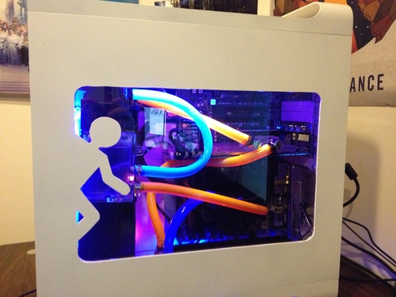

Portal Powermac G5
A year after my first computer build in 2011, I wanted to build something custom and unique. The aluminum frame of the Powermac G5 made it a good choice for my first casemod and watercooling loop. The window, fan holes, and motherboard cutout were all done by hand with a dremel. The cooling performance of the machine was adequate, but it was very loud. The original build log can be found here on Overclock.net
